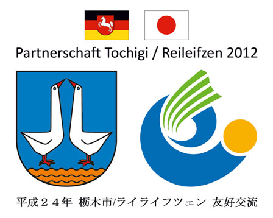
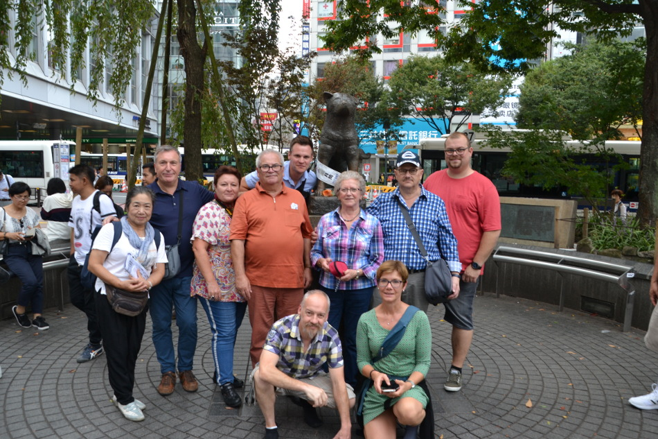

Artikel zum Nachlesen
Japaner in Reileifzen (2012) Japan-Freundschaft Teil 1 Japan-Freundschaft Teil 2 Besuch in Japan 2010 Im Zeichen der Kirschblüte Besuch aus Japan 2013 „Nichts verändert!“ (2013)

Reileifzen pflegt eine besondere Freundschaft zu Japan. Seit vielen Jahren bestehen enge Kontakte und regelmäßige Besuche bereichern das Dorfleben.
Japaner in Reileifzen (2012) Japan-Freundschaft Teil 1 Japan-Freundschaft Teil 2 Besuch in Japan 2010 Im Zeichen der Kirschblüte Besuch aus Japan 2013 „Nichts verändert!“ (2013)
Vom 01. bis 14. Oktober 2019 fand eine große Japanreise statt.
